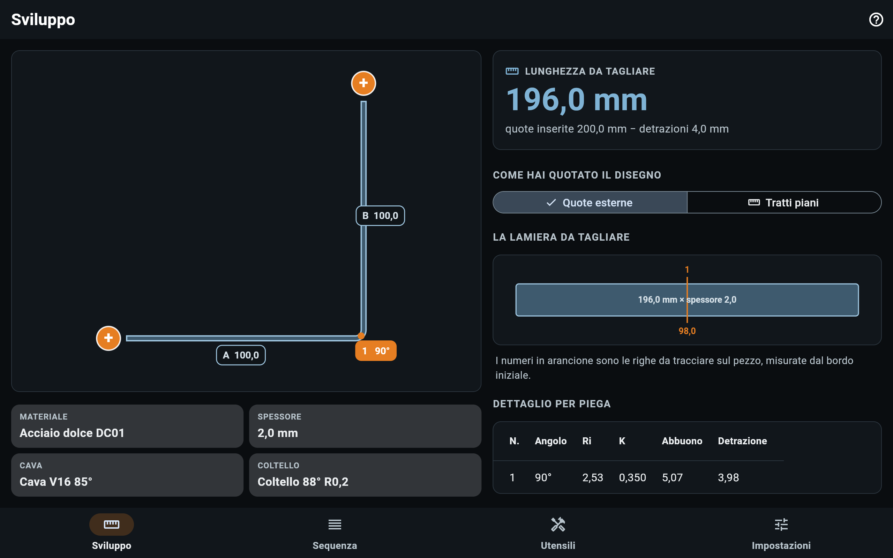
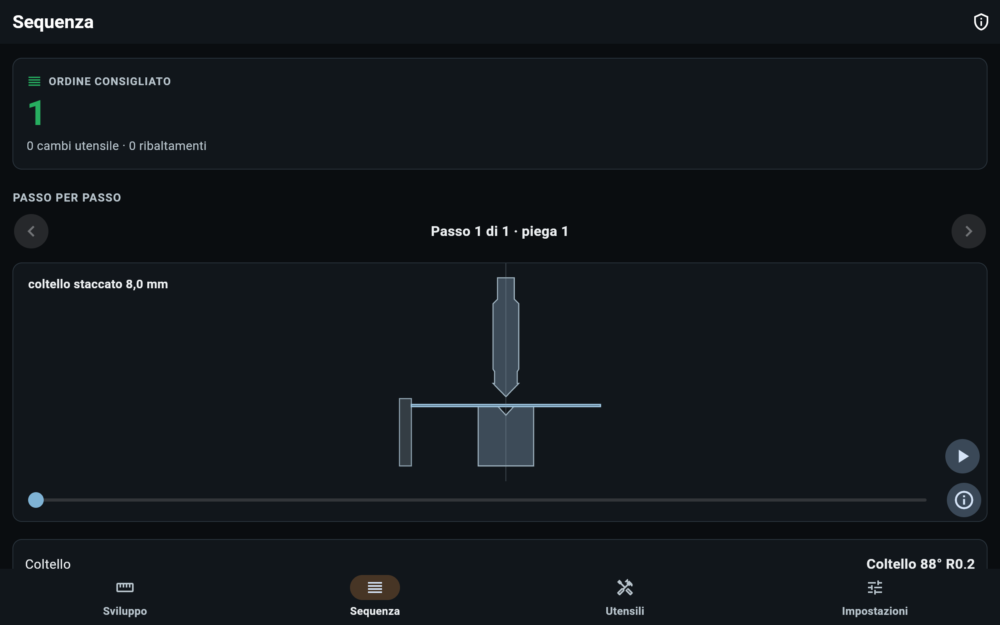
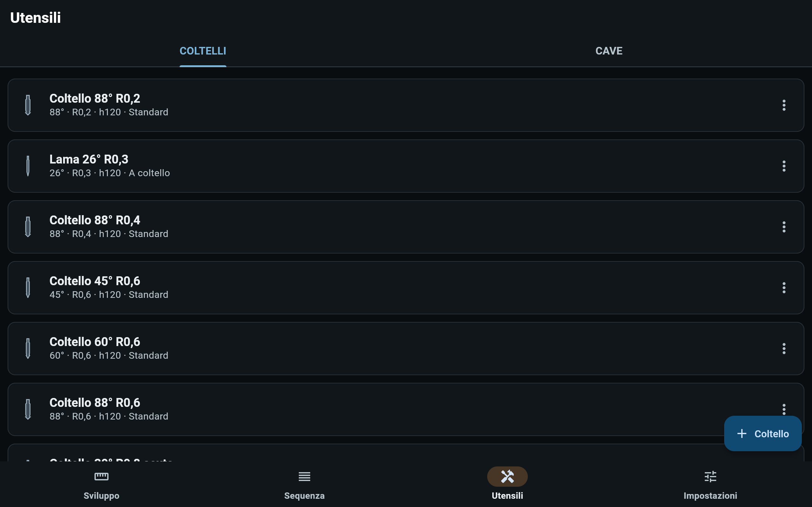
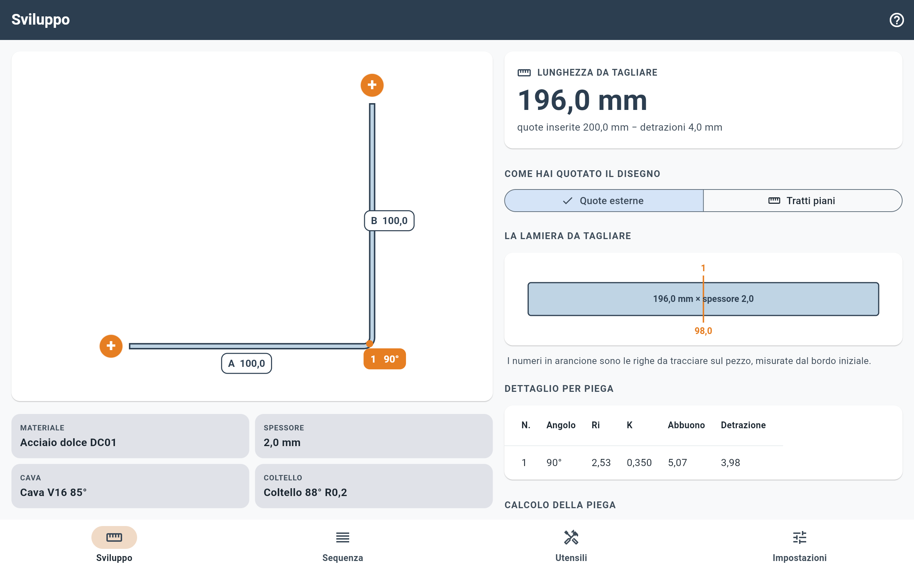
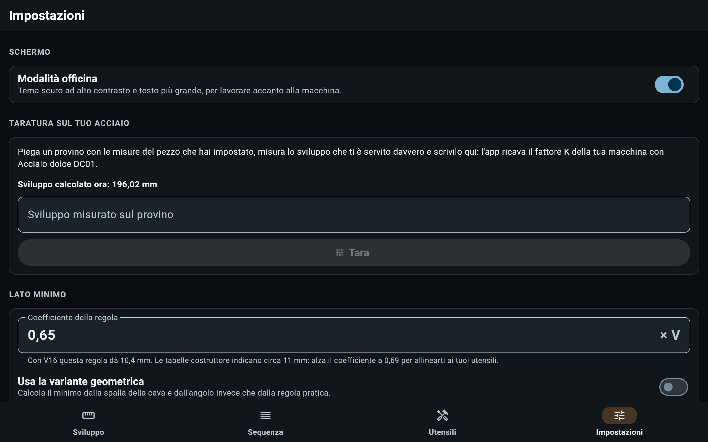

Quanto sviluppare la lamiera prima di tagliarla — senza tabelle fotocopiate, senza andare a occhio. Cava scelta → raggio interno reale in aria → fattore K → sviluppo.
Un errore di sviluppo non si recupera: la lamiera è già tagliata. Sviluppo Lamiera calcola quanto materiale serve prima del taglio, seguendo la stessa catena che si farebbe a mano con carta e penna — ma senza rifare i calcoli ogni volta e senza tabelle incollate al muro dell'officina.
Un'app, quattro schede, tutte raggiungibili dalla barra in basso.
Il disegno non è un'anteprima: è l'editor. Si tocca la quota di un lato per cambiarla, il badge di una piega per angolo, verso o per eliminarla, e i due "+" alle estremità per aggiungere un lato.
In fondo, piega per piega, la catena di calcolo intera — detrazione, raggio interno, fattore K — così chi conosce il mestiere può verificarla riga per riga.

L'ordine delle pieghe proposto passo per passo, con il disegno di cava, coltello e pezzo durante la corsa della pressa — per vedere prima cosa rischia di sbattere.
Le sequenze sono proposte, non verificate: restano da controllare a occhio come qualunque programma di piegatura.

Il parco utensili personale: coltelli e cave, con l'anteprima grafica della sagoma che si aggiorna mentre si digitano le misure. Le voci di catalogo si copiano e si modificano, ma non si cancellano — restano sempre disponibili come riferimento.

Taratura da provino, coefficienti calibrabili, giochi e decimali. Il tema scuro ad alto contrasto ("Modalità officina") è quello predefinito, pensato per lavorare in piedi accanto alla macchina, spesso con i guanti — ma si può disattivare quando serve.

Tema chiaro disponibile in alternativa
Quando si piega una lamiera, la parte esterna della curva si allunga e quella interna si accorcia. Da qualche parte in mezzo c'è una fibra che non si muove: l'asse neutro. Il fattore K dice dove sta — ed è la differenza fra uno sviluppo giusto e uno sbagliato.
Il fattore K si calcola secondo la norma DIN 6935. Se la macchina reale si comporta in modo leggermente diverso dalla teoria — capita spesso — si piega un provino con le stesse misure del pezzo, si misura lo sviluppo che è servito davvero, e l'app ricava il K reale di quella macchina, per quel materiale.
Qui un errore di calcolo non produce una quota brutta: manda a scarto lamiera vera.
Verifica sempre su un ritaglio prima di tagliare la serie.
La pubblicazione di ogni aggiornamento è bloccata finché tutti i test non passano: se un test fallisce, la nuova versione non va online.
Sviluppato da Qualifix Service.
Per domande o segnalazioni: qualifix.service25@gmail.com